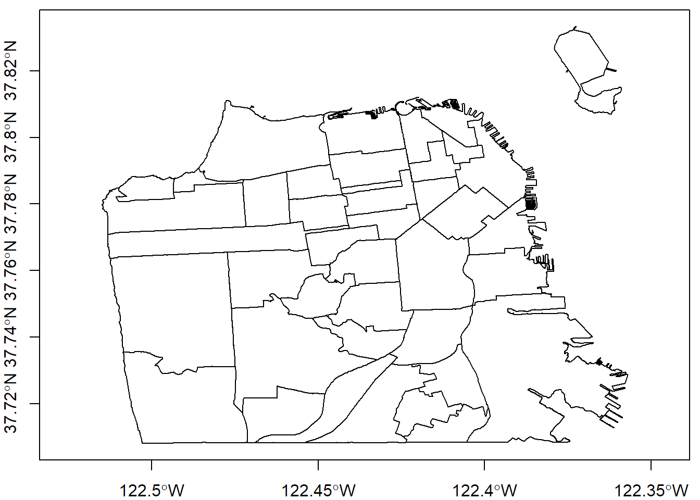
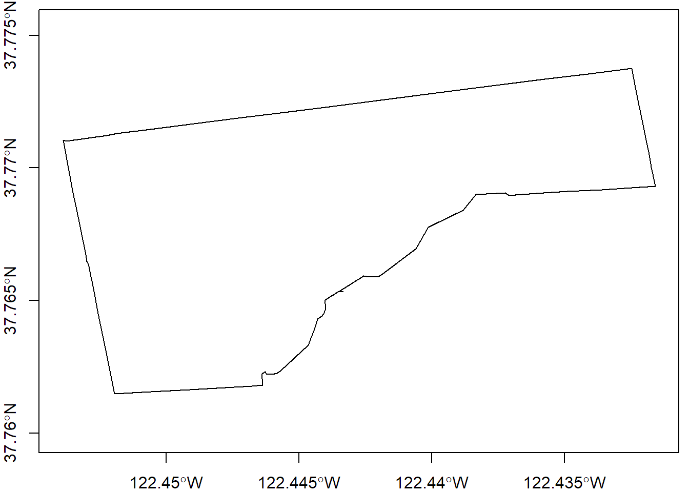
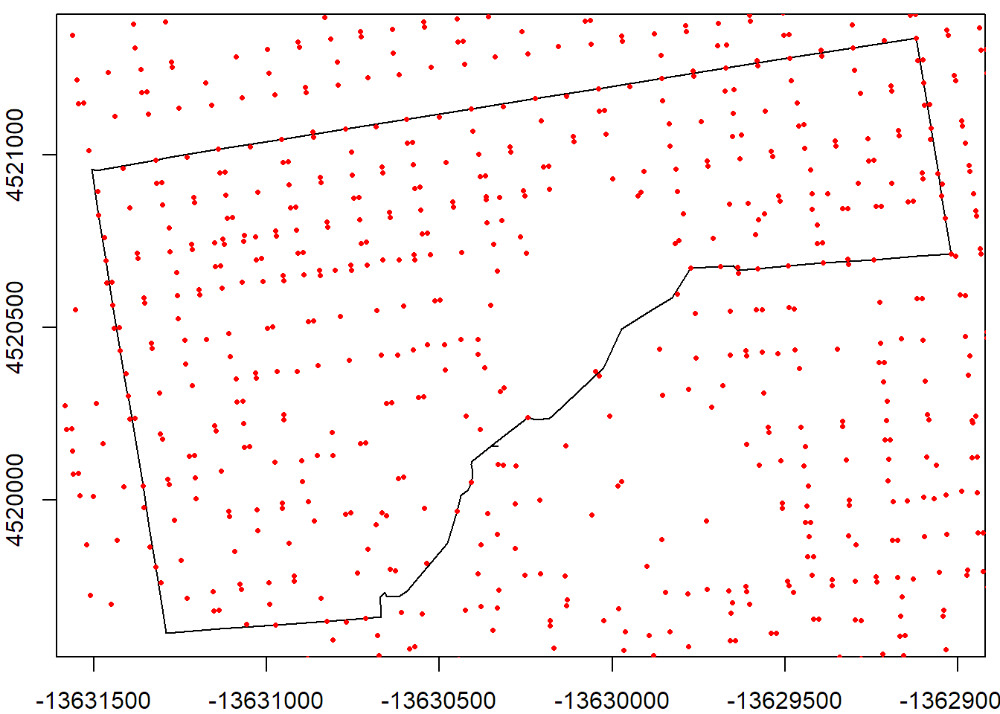
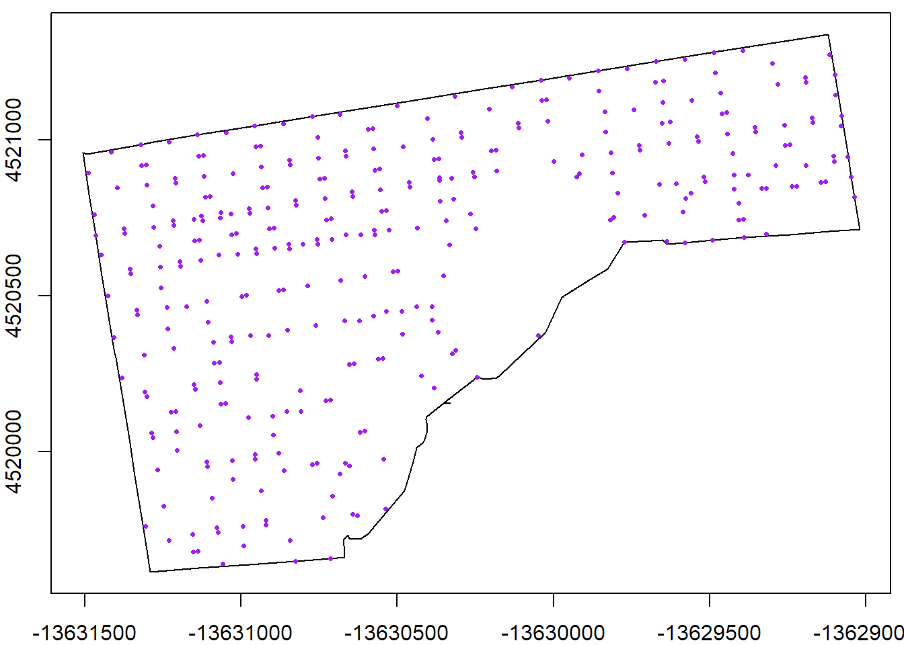
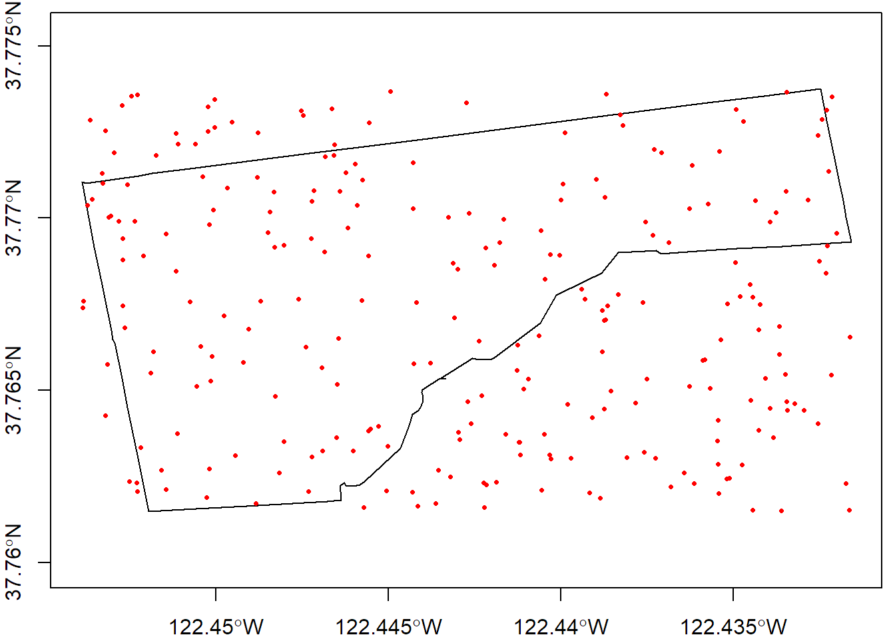
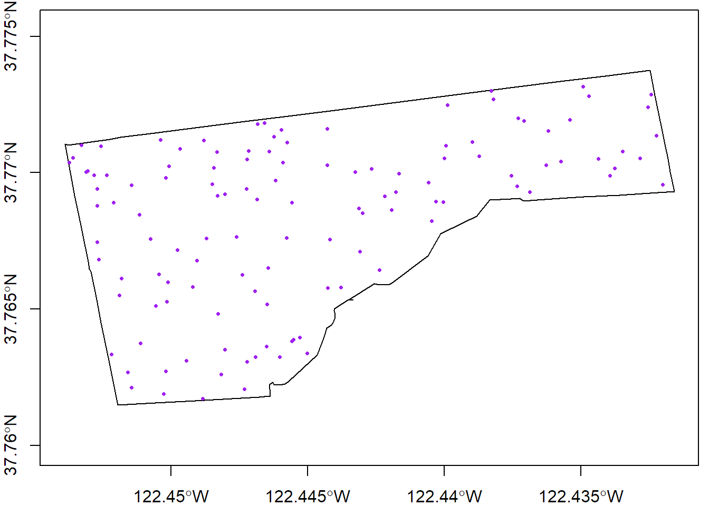

Download the GitHub repo.
Create a new R script in RStudio (File → New File → R Script).
Copy the questions below (all of which begin with the # character so RStudio will interpret them as a comment) into your script. Under each question, write R code. Run each line of R code as you enter it (press the Run button or ctrl+enter) to make sure it works.
Remember to save your script periodically to avoid losing work if RStudio crashes.
If you get stuck, click on the 'hint' link, or the question number to see the answer. Click again to hide.
If you have any questions or problems, please feel free to email the instructor.
########################################################
#### ANALYZE CRIMES IN A SAN FRANCISCO NEIGHBORHOOD ####
########################################################
# 1. Import the San Francisco neighborhoods. Select just one (e.g, Haight Ashbury).
# Save the boundary to a new variable, and plot it.
library(rgdal, quietly = TRUE)
sfnb_ll <- readOGR("data", "sf_neighborhoods")## OGR data source with driver: ESRI Shapefile
## Source: "data", layer: "sf_neighborhoods"
## with 41 features
## It has 1 fieldsplot(sfnb_ll, axes=T, asp=1)
haight_ll <- sfnb_ll[sfnb_ll$nhood=="Haight Ashbury", ]
plot(haight_ll, axes=TRUE, asp=1)
# 2. Import the San Francisco Crimes Database from the sf_crime file GeoDB.
gdb_dir <- "data/sf_crime.gdb"
file.exists(gdb_dir)## [1] TRUErgdal::ogrListLayers(gdb_dir)## [1] "San_Francisco_Crimes"
## attr(,"driver")
## [1] "OpenFileGDB"
## attr(,"nlayers")
## [1] 1sfcrime_sp <- rgdal::readOGR(dsn=gdb_dir,layer="San_Francisco_Crimes")## OGR data source with driver: OpenFileGDB
## Source: "data/sf_crime.gdb", layer: "San_Francisco_Crimes"
## with 74760 features
## It has 10 fieldsclass(sfcrime_sp)## [1] "SpatialPointsDataFrame"
## attr(,"package")
## [1] "sp"# 3. Find out how many crimes occurred in your selected neighborhood.
First let's inspect the proj4string slot of both layers.
sfcrime_sp@proj4string## CRS arguments:
## +proj=merc +lon_0=0 +k=1 +x_0=0 +y_0=0 +datum=WGS84 +units=m
## +no_defs +ellps=WGS84 +towgs84=0,0,0haight_ll@proj4string## CRS arguments: +proj=longlat +ellps=WGS84 +no_defsThe crime locations are projected, while neighborhood boundaries are not. So before we can do a spatial overlay, we have to get them in the same CRS. Let's project the neighborhood boundary into the projection system of the crime data.
haight_prj <- sp::spTransform(haight_ll, sfcrime_sp@proj4string)
plot(haight_prj, axes=TRUE, asp=1)
plot(sfcrime_sp, add=TRUE, col="red", pch=16, cex=0.5)
Now we can do the spatial overlay. Note how we use the sp::geometry() function to strip off the data frame, so that sp::over() returns for each point the index (row number) of the polygon it falls in (and NA if there's no overlap).
crimept_polyid <- sp::over(sp::geometry(sfcrime_sp), sp::geometry(haight_prj))
sum(is.na(crimept_polyid))## [1] 73000sum(!is.na(crimept_polyid))## [1] 1760haight_crime_pts <- sfcrime_sp[!is.na(crimept_polyid),]
plot(haight_prj, axes=TRUE, asp=1)
plot(haight_crime_pts, add=TRUE, col="purple", pch=16, cex=0.5)
nrow(haight_crime_pts@data)## [1] 1760There are 1760 crimes in this neighborhood.
# 4. What was the most common type of crime?
head(haight_crime_pts@data)## Field1 Dates Category
## 92 27676 2014/12/28 00:00:00 NON-CRIMINAL
## 132 27716 2014/12/28 00:00:00 BURGLARY
## 200 27784 2014/12/28 00:00:00 ASSAULT
## 201 27785 2014/12/28 00:00:00 ASSAULT
## 202 27786 2014/12/28 00:00:00 OTHER OFFENSES
## 203 27787 2014/12/28 00:00:00 OTHER OFFENSES
## Descript DayOfWeek PdDistrict
## 92 CIVIL SIDEWALKS, CITATION Sunday PARK
## 132 BURGLARY OF FLAT, UNLAWFUL ENTRY Sunday PARK
## 200 ASSAULT ON A POLICE OFFICER WITH A DEADLY WEAPON Sunday PARK
## 201 THREATS AGAINST LIFE Sunday PARK
## 202 RESISTING ARREST Sunday PARK
## 203 VIOLATION OF MUNICIPAL CODE Sunday PARK
## Resolution Address X Y
## 92 ARREST, BOOKED 1400 Block of HAIGHT ST -122.4462 37.77016
## 132 NONE 1600 Block of OAK ST -122.4465 37.77192
## 200 ARREST, BOOKED 1400 Block of HAIGHT ST -122.4461 37.77005
## 201 ARREST, BOOKED 1400 Block of HAIGHT ST -122.4461 37.77005
## 202 ARREST, BOOKED 1400 Block of HAIGHT ST -122.4461 37.77005
## 203 ARREST, BOOKED 1400 Block of HAIGHT ST -122.4461 37.77005sort(table(haight_crime_pts@data$Category), decreasing = TRUE)##
## NON-CRIMINAL LARCENY/THEFT
## 514 256
## OTHER OFFENSES WARRANTS
## 216 139
## DRUG/NARCOTIC ASSAULT
## 123 90
## BURGLARY MISSING PERSON
## 73 67
## VEHICLE THEFT VANDALISM
## 67 65
## SUSPICIOUS OCC FRAUD
## 31 29
## ROBBERY DRUNKENNESS
## 18 11
## WEAPON LAWS RUNAWAY
## 11 10
## SECONDARY CODES LIQUOR LAWS
## 8 7
## STOLEN PROPERTY DISORDERLY CONDUCT
## 7 4
## DRIVING UNDER THE INFLUENCE FORGERY/COUNTERFEITING
## 4 4
## TRESPASS KIDNAPPING
## 4 2
## ARSON BAD CHECKS
## 0 0
## BRIBERY EMBEZZLEMENT
## 0 0
## EXTORTION FAMILY OFFENSES
## 0 0
## GAMBLING LOITERING
## 0 0
## PROSTITUTION SEX OFFENSES FORCIBLE
## 0 0
## SEX OFFENSES NON FORCIBLE SUICIDE
## 0 0
## TREA
## 0It looks like non-criminal citations are the most common offense.
#############################################
#### GENERATE RANDOM POINTS IN A POLYGON ####
#############################################
# 5. Generate 50 random points that fall within your selected neighborhood.
## Get the bounding box
hbb <- haight_ll@bbox
hbb## min max
## x -122.45390 -122.43157
## y 37.76148 37.77376num_pts <- 250
xs <- runif(min=hbb[1,1], max=hbb[1,2], n=num_pts)
ys <- runif(min=hbb[2,1], max=hbb[2,2], n=num_pts)
samp_pts_ext <- SpatialPoints(data.frame(xs,ys), proj4string = haight_ll@proj4string)
plot(haight_ll, axes=TRUE, asp=1)
plot(samp_pts_ext, add=TRUE, col="red", pch=16, cex=0.5)
Next, we use a spatial ovelay to get rid of the points outside the boundary. We can use either sp::over() or rgeos::gIntersection(). gIntersection() requires fewer gymnastics so we'll go with that.
library(rgeos)
samp_pts_bnd <- rgeos::gIntersection(samp_pts_ext, haight_ll)
plot(haight_ll, axes=TRUE, asp=1)
plot(samp_pts_bnd, add=TRUE, col="purple", pch=16, cex=0.5)
Determine how many points fall within the neighborhood.
length(samp_pts_bnd)## [1] 121That's too many. Randomly select 50 of the points.
idx <- sample(1:length(samp_pts_bnd), size=50, replace=FALSE)
samp_50pts_bnd <- samp_pts_bnd[idx,]
plot(haight_ll, axes=TRUE, asp=1)
plot(samp_50pts_bnd, add=TRUE, col="purple", pch=16, cex=0.5)